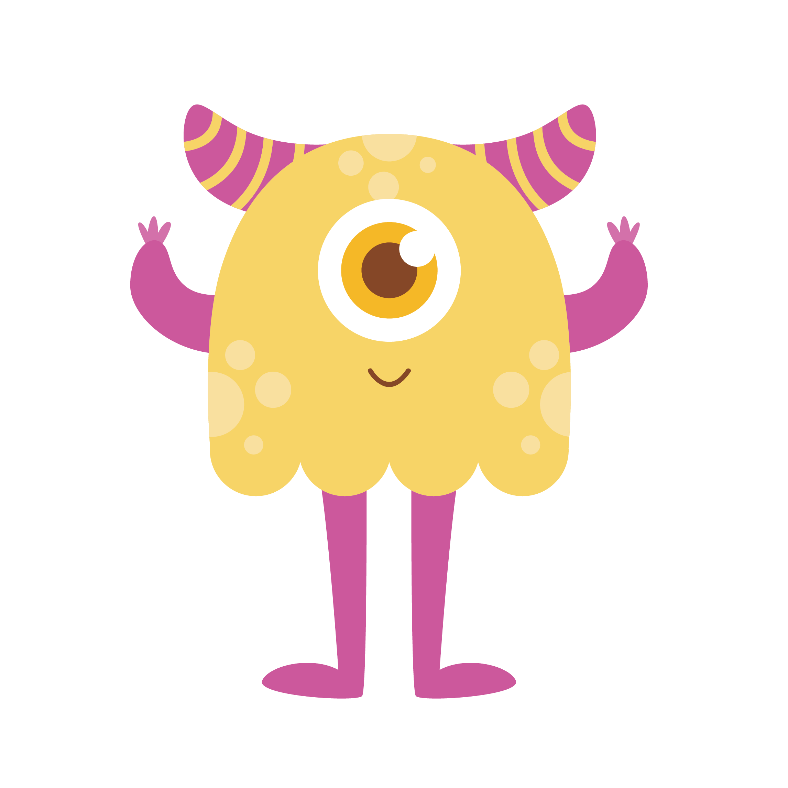
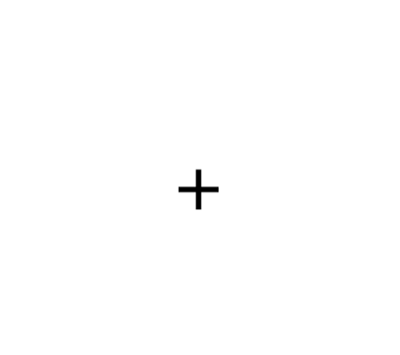
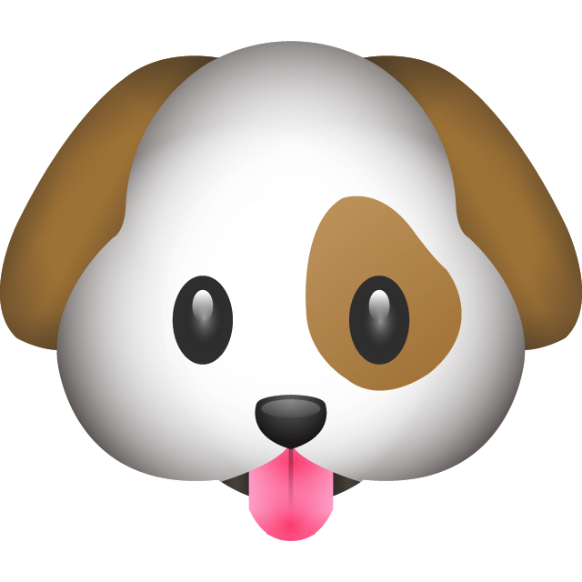
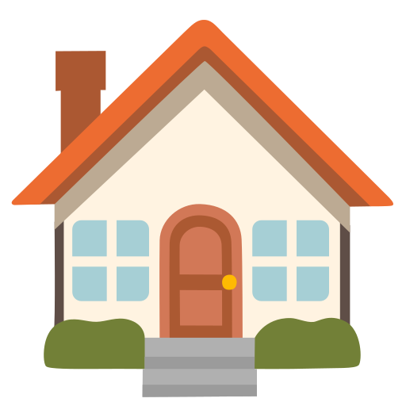
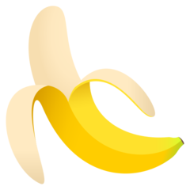
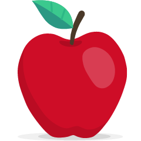

<!DOCTYPE html>
<html>
  <head>
    <!-- jspsych script -->
    <script src="jspsych/dist/jspsych.js"></script>

    <!-- plugin scripts -->
    <script src="jspsych/dist/plugin-instructions.js"></script>
    <script src="jspsych/dist/plugin-html-button-response.js"></script>
    <script src="jspsych/dist/plugin-audio-image-keyboard-response.js"></script> <!-- custom made - Lucie Wolters -->
    <script src="jspsych/dist/plugin-audio-image-button-response.js"></script> <!-- custom made - Lucie Wolters -->
    <script src="jspsych/dist/plugin-html-keyboard-response.js"></script>
    <script src="jspsych/dist/plugin-browser-check.js"></script>
    <script src="jspsych/dist/plugin-fullscreen.js"></script>
    <script src="jspsych/dist/plugin-external-html.js"></script>
    <script src="jspsych/dist/plugin-survey-html-form.js"></script> <!-- custom made - Lucie Wolters -->
    <script src="jspsych/dist/plugin-preload.js"></script>
    <script src="https://unpkg.com/@jspsych-contrib/plugin-pipe"></script>

    <!-- style sheet -->
    <link rel="stylesheet" href="jspsych/dist/jspsych.css">

    <!-- instantiate progress bar -->
    <style>
      #jspsych-progressbar-container { visibility: hidden; }
    </style>
  </head>

  <body>
    <script>
      // =========================
      // INIT
      // =========================
      var jsPsych = initJsPsych({
        experiment_width: 900,
        show_progress_bar: true,
        auto_update_progress_bar: false,
        message_progress_bar: ''
      });

      var subject_id = jsPsych.randomization.randomID(15);
      const filename = `${subject_id}.csv`;

      // =========================
      // LANGUAGE SETS
      // =========================
      var L1s = [
        // ["kulego", "nagitu", "tobuma", "midobe"],
        // ["lakubi", "negado", "mudile", "kitena"],
        // ["dogiba", "kalegu", "tebodi", "minato"],
        // ["kinome", "teguda", "bulego", "moditu"],
        // ["tobanu", "gukema", "delubo", "lamodi"],
        ["nodebu", "dimate", "mekugo", "gubila"]
      ];

      var L2s = [
        // ["lemaku", "gibeto", "bugona", "dotumi"],
        // ["binaku", "temula", "dokine", "galedi"],
        // ["nadite", "lebado", "bogumi", "gitoka"],
        // ["gumeki", "letumo", "nodabu", "digote"],
        // ["matolu", "nubola", "mogude", "kediba"],
        ["bimegu", "tegoma", "kudino", "labude"]
      ];

      // cond1: 0=uniform, 1=zipfian; cond2 is opposite
      var cond1 = jsPsych.randomization.sampleWithReplacement([0, 1], 1)[0];
      var cond2 = cond1 === 0 ? 1 : 0;

      // choose 2 of 6 language pairs
      // var lang_nums = jsPsych.randomization.sampleWithoutReplacement([0, 1, 2, 3, 4, 5], 2);
      // var lang_nums = jsPsych.randomization.sampleWithoutReplacement([0, 1, 2], 2);
      var lang_nums = [0, 1]
      var L1_1 = L1s[lang_nums[0]];
      var L2_1 = L2s[lang_nums[0]];
      var L1_2 = L1s[lang_nums[1]];
      var L2_2 = L2s[lang_nums[1]];

      // choose whether words come from L1 or L2; other language is foils
      var words_foils = jsPsych.randomization.sampleWithReplacement([0, 1], 1)[0];
      var words1, words2, foils1, foils2;
      if (words_foils === 0) {
        words1 = L1_1; words2 = L1_2;
        foils1 = L2_1; foils2 = L2_2;
      } else {
        words1 = L2_1; words2 = L2_2;
        foils1 = L1_1; foils2 = L1_2;
      }

      var conditions = ["uniform", "zipfian"];
      var condition1 = conditions[cond1];
      var condition2 = conditions[cond2];

      var frequency_ranks1 = cond1 === 1 ? jsPsych.randomization.sampleWithoutReplacement(words1, 4) : "NA";
      var frequency_ranks2 = cond2 === 1 ? jsPsych.randomization.sampleWithoutReplacement(words2, 4) : "NA";

      // Prolific URL vars
      var prolific_id = jsPsych.data.getURLVariable('PROLIFIC_PID');
      var study_id = jsPsych.data.getURLVariable('STUDY_ID');
      var session_id = jsPsych.data.getURLVariable('SESSION_ID');

      // global data props
      jsPsych.data.addProperties({
        subject_id: subject_id,
        prolific_id: prolific_id,
        study_id: study_id,
        session_id: session_id,

        lang_pair1: lang_nums[0] + 1,
        lang_pair2: lang_nums[1] + 1,

        words1: words1.join("|"),
        foils1: foils1.join("|"),
        words2: words2.join("|"),
        foils2: foils2.join("|"),

        condition1: condition1,
        condition2: condition2,
        frequency_ranks1: Array.isArray(frequency_ranks1) ? frequency_ranks1.join("|") : frequency_ranks1,
        frequency_ranks2: Array.isArray(frequency_ranks2) ? frequency_ranks2.join("|") : frequency_ranks2
      });

      var rounds = [
        { round: 1, words: words1, foils: foils1, cond: cond1, condition: condition1, frequency_ranks: frequency_ranks1 },
        { round: 2, words: words2, foils: foils2, cond: cond2, condition: condition2, frequency_ranks: frequency_ranks2 }
      ];

      var timeline = [];

      // =========================
      // BROWSER CHECK
      // =========================
      var browser_check = {
        type: jsPsychBrowserCheck,
        features: ["width", "height", "webaudio", "browser", "mobile", "fullscreen"],
        minimum_width: 1000,
        minimum_height: 600,
        allow_window_resize: true,
        inclusion_function: (data) => {
          return data.browser === 'chrome' && data.mobile === false && data.webaudio === true;
        },
        exclusion_message: (data) => {
          if (data.mobile) {
            return '<p>You must use a desktop/laptop computer to participate in this experiment. Please return your submission on Prolific.</p>';
          } else if (data.browser !== 'chrome') {
            return '<p>You must use Chrome as your browser to complete this experiment. Please re-open the experiment in Chrome, if possible, or return your submission on Prolific.</p>';
          } else {
            return '<p>You do not have the right screen size or audio player to complete this experiment. Please increase screen size, if possible, or return your submission on Prolific.</p>';
          }
        },
        data: { task: 'browser_check_initial' }
      };

      var browser_check_during_exp = {
        type: jsPsychBrowserCheck,
        features: ["width", "height", "webaudio", "browser", "mobile", "fullscreen"],
        minimum_width: 1000,
        minimum_height: 600,
        allow_window_resize: true,
        data: { task: 'browser_check_during_exp' }
      };

      // =========================
      // FULLSCREEN
      // =========================
      var enter_fullscreen = {
        type: jsPsychFullscreen,
        fullscreen_mode: true,
        delay_after: 500,
        data: { task: 'enter_fullscreen' }
      };

      var exit_fullscreen = {
        type: jsPsychFullscreen,
        fullscreen_mode: false,
        delay_after: 0,
        data: { task: 'exit_fullscreen' }
      };

      // =========================
      // HELPERS
      // =========================
      function shuffleNoRepeats(word_list) {
        let shuffled;
        let hasRepeats = true;

        while (hasRepeats) {
          shuffled = jsPsych.randomization.shuffle(word_list.slice());
          hasRepeats = false;
          for (let i = 1; i < shuffled.length; i++) {
            if (shuffled[i] === shuffled[i - 1]) {
              hasRepeats = true;
              break;
            }
          }
        }
        return shuffled;
      }

      function makeExposureFiles(words, condNumber, frequencyRanks) {
        const exposure_files = [];
        let lastWordPreviousBlock = null;

        for (let i = 0; i < 6; i++) {
          let trialList = [];

          if (condNumber === 0) {
            // uniform: 6x each word (24) + 1 random word = 25
            words.forEach(word => {
              for (let x = 0; x < 6; x++) trialList.push(word);
            });
            trialList.push(jsPsych.randomization.sampleWithoutReplacement(words, 1)[0]);
          } else {
            // zipfian: 12, 6, 4, 3 = 25
            const zipf = [12, 6, 4, 3];
            for (let x = 0; x < frequencyRanks.length; x++) {
              let word = frequencyRanks[x];
              let count = zipf[x];
              for (let y = 0; y < count; y++) trialList.push(word);
            }
          }

          // enforce no repeats within block + across block boundaries
          let valid = false;
          while (!valid) {
            trialList = shuffleNoRepeats(trialList);
            let firstWord = trialList[0];
            let lastWord = trialList[trialList.length - 1];
            let noBoundaryRepeat = (lastWordPreviousBlock === null) || (firstWord !== lastWordPreviousBlock);
            if (noBoundaryRepeat) {
              valid = true;
              lastWordPreviousBlock = lastWord;
            }
          }

          trialList.forEach(w => exposure_files.push(`stimuli/words/${w}.wav`));
          exposure_files.push("stimuli/fixation.wav");
        }

        return exposure_files;
      }

      function checkFullExposure(arr) {
        const filtered = arr.filter(file => !file.includes("fixation"));
        for (let i = 1; i < filtered.length; i++) {
          if (filtered[i] === filtered[i - 1]) {
            throw new Error("Adjacent duplicate detected across blocks: " + filtered[i]);
          }
        }
      }

      function get_valid_item(stimuli_array, last_item) {
        const valid = stimuli_array.filter(stim =>
          stim.word !== last_item.word &&
          stim.foil !== last_item.foil
        );

        if (valid.length === 0) {
          return jsPsych.randomization.sampleWithoutReplacement(stimuli_array, 1)[0];
        }
        return jsPsych.randomization.sampleWithoutReplacement(valid, 1)[0];
      }

      function makeSegmentationStimuli(words, foils) {
        let segmentation_test_stimuli = [];
        let trial_number = 1;

        for (let w = 0; w < words.length; w++) {
          for (let f = 0; f < foils.length; f++) {
            segmentation_test_stimuli.push({
              word: words[w],
              foil: foils[f],
              change_order: trial_number % 2 === 0
            });
            trial_number++;
          }
        }

        segmentation_test_stimuli = jsPsych.randomization.shuffle(segmentation_test_stimuli);

        let segmentation_test_stimuli_ran = [];
        for (let i = 0; i < 16; i++) {
          if (i === 0) {
            segmentation_test_stimuli_ran.push(segmentation_test_stimuli.pop());
          } else {
            let last_item = segmentation_test_stimuli_ran[segmentation_test_stimuli_ran.length - 1];
            let new_item = get_valid_item(segmentation_test_stimuli, last_item);
            let index = segmentation_test_stimuli.indexOf(new_item);
            if (index > -1) segmentation_test_stimuli.splice(index, 1);
            segmentation_test_stimuli_ran.push(new_item);
          }
        }

        return segmentation_test_stimuli_ran;
      }

      function showProgressBarTrial(taskName) {
        return {
          type: jsPsychHtmlKeyboardResponse,
          stimulus: "",
          choices: "NO_KEYS",
          trial_duration: 1,
          on_start: function () {
            const progressContainer = document.querySelector('#jspsych-progressbar-container');
            if (progressContainer) progressContainer.style.visibility = 'visible';
            jsPsych.setProgressBar(0);
          },
          data: { task: taskName }
        };
      }

      function hideProgressBarTrial(taskName) {
        return {
          type: jsPsychHtmlKeyboardResponse,
          stimulus: "",
          choices: "NO_KEYS",
          trial_duration: 1,
          on_start: function () {
            const progressContainer = document.querySelector('#jspsych-progressbar-container');
            if (progressContainer) progressContainer.style.visibility = 'hidden';
            jsPsych.setProgressBar(0);
          },
          data: { task: taskName }
        };
      }

      function buildRoundTimeline(roundConfig) {
        const roundNum = roundConfig.round;
        const words = roundConfig.words;
        const foils = roundConfig.foils;
        const cond = roundConfig.cond;
        const conditionLabel = roundConfig.condition;
        const frequencyRanks = roundConfig.frequency_ranks;

        const exposure_files = makeExposureFiles(words, cond, frequencyRanks);
        checkFullExposure(exposure_files);

        const segmentation_test_stimuli_ran = makeSegmentationStimuli(words, foils);

        const exposure_total = exposure_files.length;
        const segmentation_total = segmentation_test_stimuli_ran.length;

        // const round_exposure_instructions = {
        //   type: jsPsychHtmlButtonResponse,
        //   stimulus:
        //     `<p><b>Round ${roundNum} of 2</b></p>` +
        //     `<p>In this phase, listen carefully to the alien language and try to learn patterns in the speech.</p>` +
        //     `<p>A progress bar will show your progress through this listening phase.</p>` +
        //     `<p></p>` +
        //     `<p>Click next to begin.</p>`,
        //   choices: ['next'],
        //   data: { task: 'instructions_exposure', round: roundNum, condition: conditionLabel }
        // };

        const exposure_trial = {
          type: jsPsychAudioImageKeyboardResponse,
          image: function () {
            return '';
          },
          stimulus: jsPsych.timelineVariable('audio'),
          choices: "NO_KEYS",
          audio_delay: 0,
          trial_ends_after_audio: true,
          response_ends_trial: false,
          response_allowed_while_playing: false,
          post_trial_gap: 0,
          data: {
            task: 'exposure_trial',
            round: roundNum,
            condition: conditionLabel
          },
          on_finish: function () {
            const completed = jsPsych.data.get().filter({ task: 'exposure_trial', round: roundNum }).count();
            jsPsych.setProgressBar(completed / exposure_total);
          }
        };

        const exposure_block = {
          timeline: [exposure_trial],
          timeline_variables: exposure_files.map(audio_file => ({ audio: audio_file })),
          randomize_order: false
        };

        const segmentation_instructions = {
          type: jsPsychHtmlButtonResponse,
          stimulus: [
            '<p>In this section, we will test whether you learned something about the alien language. We will ask you 16 questions. For each question, you will hear 2 words. One of these words is a real word that appeared in the language you were listening to, and the other will sound similar to things you heard but did not actually appear. Your job is to select the word you DID hear. This task is challenging, so if you are unsure please make your best guess!</p>' +
            '<p></p>' +
            '<p> Click next to begin. </p>'
          ],
          choices: ['next'],
          data: { task: 'instructions_segmentation', round: roundNum, condition: conditionLabel }
        };

        const segmentation_testing = {
          timeline: [
            {
              type: jsPsychAudioImageButtonResponse,
              image: function () { return ``; },
              audio1: function () {
                return `stimuli/words/${jsPsych.timelineVariable('word')}.wav`;
              },
              audio2: function () {
                return `stimuli/words/${jsPsych.timelineVariable('foil')}.wav`;
              },
              change_audio_order: jsPsych.timelineVariable('change_order'),
              inter_audio_gap: 1000,
              audio_delay: 1000,
              choices: [
                '<p style="font-size: xx-large; width: 150px;"><b>1</b></p>',
                '<p style="font-size: xx-large; width: 150px;"><b>2</b></p>'
              ],
              prompt: '<p id="prompt">Which one is a word?</p>',
              response_allowed_while_playing: false,
              post_trial_gap: 1500,
              data: {
                task: 'segmentation_trial',
                round: roundNum,
                condition: conditionLabel,
                word: jsPsych.timelineVariable('word'),
                foil: jsPsych.timelineVariable('foil'),
                change_audio_order: jsPsych.timelineVariable('change_order')
              },
              on_finish: function (data) {
                let correct_button;

                if (data.change_audio_order) {
                  // foil first, word second
                  data.button_1 = data.foil;
                  data.button_2 = data.word;
                  correct_button = 1;
                } else {
                  // word first, foil second
                  data.button_1 = data.word;
                  data.button_2 = data.foil;
                  correct_button = 0;
                }

                data.response_audio = data.response === 0 ? data.button_1 : data.button_2;
                data.correct = (data.response === correct_button) ? 1 : 0;

                const completed = jsPsych.data.get().filter({ task: 'segmentation_trial', round: roundNum }).count();
                jsPsych.setProgressBar(completed / segmentation_total);
              }
            }
          ],
          timeline_variables: segmentation_test_stimuli_ran,
          randomize_order: false
        };

        return [
          // round_exposure_instructions,
          showProgressBarTrial(`show_progress_exposure_r${roundNum}`),
          exposure_block,
          hideProgressBarTrial(`hide_progress_exposure_r${roundNum}`),
          segmentation_instructions,
          showProgressBarTrial(`show_progress_segmentation_r${roundNum}`),
          segmentation_testing,
          hideProgressBarTrial(`hide_progress_segmentation_r${roundNum}`)
        ];
      }

      // =========================
      // PRELOAD
      // =========================
      const audioSet = new Set();
      audioSet.add("stimuli/fixation.wav");

      [...words1, ...foils1, ...words2, ...foils2].forEach(w => {
        audioSet.add(`stimuli/words/${w}.wav`);
      });

      ["apple", "banana", "dog", "house"].forEach(x => {
        audioSet.add(`stimuli/audio_check/${x}.mp3`);
      });

      var preload = {
        type: jsPsychPreload,
        images: [
          "stimuli/fixation.png",
          "stimuli/alien.png",
          "stimuli/audio_check/apple.png",
          "stimuli/audio_check/banana.png",
          "stimuli/audio_check/dog.png",
          "stimuli/audio_check/house.png"
        ],
        audio: Array.from(audioSet),
        data: { task: 'preload' }
      };

      // =========================
      // CONSENT
      // =========================
      var check_consent = function () {
        if (document.getElementById("consent_checkbox").checked) {
          return true;
        } else {
          alert("If you wish to participate, you must check the box next to the statement 'I agree to participate in this study.'");
          return false;
        }
      };

      var consent_form = {
        type: jsPsychExternalHtml,
        url: "consentForm.html",
        cont_btn: "start",
        check_fn: check_consent,
        data: { task: 'consent' }
      };

      // =========================
      // AUDIO CHECK (LOOP UNTIL CORRECT)
      // =========================
      var audio_check_stims = ['dog', 'house', 'banana', 'apple'];
      var current_audio_check_idx = jsPsych.randomization.sampleWithoutReplacement([0, 1, 2, 3], 1)[0];

      var test_audio = {
        type: jsPsychHtmlButtonResponse,
        stimulus: function () {
          const stimName = audio_check_stims[current_audio_check_idx];
          return `
            <p>First, let's make sure your audio is working.</p>
            <p>Listen to the audio by clicking play below, and adjust your volume if needed.</p>
            <p>
              <audio controls>
                <source src="stimuli/audio_check/${stimName}.mp3" type="audio/mp3">
              </audio>
            </p>
            <p>What image did the audio describe?</p>
          `;
        },
        choices: [
          "",
          "",
          "",
          ""
        ],
        post_trial_gap: 500,
        data: { task: 'audio_test' },
        on_finish: function (data) {
          data.target_index = current_audio_check_idx;
          data.correct = data.response === current_audio_check_idx ? 1 : 0;
          if (data.correct === 0) {
            current_audio_check_idx = jsPsych.randomization.sampleWithoutReplacement([0, 1, 2, 3], 1)[0];
          }
        }
      };

      var check_result = {
        timeline: [test_audio],
        loop_function: function (data) {
          const last = data.values()[data.values().length - 1];
          return last.correct !== 1;
        }
      };

      // =========================
      // MAIN INTRO
      // =========================
      var instructions = {
        type: jsPsychHtmlButtonResponse,
        stimulus:
          '<p>Welcome to the experiment.</p>' +
          '<p>In this study, you will be listening to an alien language. Your job is to listen carefully, and try your best to find and learn some patterns in the speech. If you pay attention, some of this learning may happen even without you noticing it. Sometimes, the speech will stop for a few seconds, so take those brief periods of silence to rest. This learning phase will take several minutes: a progress bar will show you how far along you are. After this phase, you will be asked some questions about what you heard, so make sure to pay attention!</p>' +
          '<p>You will complete 2 rounds. Please pay close attention throughout.</p>' +
          '<p></p>' +
          '<p>Click next to begin.</p>',
        choices: ['next'],
        data: { task: 'instructions_main' }
      };

      // =========================
      // BUILD TIMELINE
      // =========================
      timeline.push(browser_check);
      timeline.push(preload, consent_form, enter_fullscreen, check_result, instructions);

      timeline.push(...buildRoundTimeline(rounds[0]));
      timeline.push(browser_check_during_exp);
      timeline.push(...buildRoundTimeline(rounds[1]));

      // =========================
      // SAVE + END
      // =========================
      var recording_question_dataSaving = {
        type: jsPsychHtmlButtonResponse,
        stimulus: "<p>Did you use any recording device or written notes during the experiment? Your answer will not affect your compensation.</p>",
        choices: ["No", "Yes"],
        data: { task: 'recording_question' }
      };

      const save_data = {
        type: jsPsychPipe,
        action: "save",
        experiment_id: "VPOLJ4qgnyOf",
        filename: filename,
        data_string: () => jsPsych.data.get().csv()
      };

      var final_trial = {
        type: jsPsychHtmlButtonResponse,
        stimulus: `<p>You've finished the last task. Thank you for participating!</p>
                   <p>Please copy this completion code: <b>C3YJE9CN</b></p>
                   <p>Click "finish" to return to Prolific.</p>`,
        choices: ['finish'],
        data: { task: 'final_trial' }
      };

      timeline.push(recording_question_dataSaving, save_data, exit_fullscreen, final_trial);

      // run
      jsPsych.run(timeline);
    </script>
  </body>
</html>
